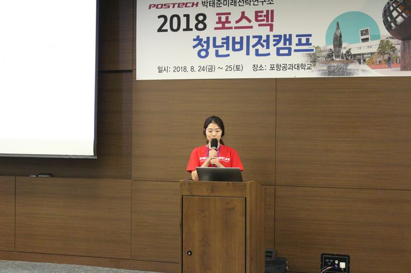

제 5회 째인 박태준미래전략연구소 대학생 및 대학원생 공모전
주제 ‘한국 사회의 갈등을 해소하기 위한 방안’
(세대 갈등, 계층 갈등, 가치관 갈등, 이념 갈등. 젠던 갈등)
최 우 수 상
「같은세상 다른생각의 세대갈등, 관념의 차이 인정하기」
- 육솔(포항공과대학교)
Q. 어떤 계기로 공모전에 응모하게 되었나요?
가장 큰 계기는 글을 잘 써보고 싶다는 생각 때문이었습니다. 평소 생각과 아이디어를 이야기할 때마다, 그것을 잘 풀어내지를 못해서 제 말을 듣는 사람들에게 '무슨 말을 하는지 잘 모르겠다’ 라는 반응을 항상 들었습니다. 제가 무슨 말을 하는지 상대방이 확실히 알아듣게 하고 싶었고, 이번 에세이가 그것을 실천하는 좋은 기회라고 생각했습니다. 게다가 저에게는 주제가 흥미로웠습니다. 사회 구조 속에 이제 막 접어들어서인지, 유난히 본인이 속한 사회 속에서 갈등이 많았던 저와 제 친구들을 보며 우리가 겪는 갈등과 분노는 어디에서 오는 건지 파악하고 싶었습니다. 사실 제가 쓴 주제인 세대갈등은 직접적으로 겪는 갈등은 아니었지만 갈등의 근본은 같다고 생각했습니다.
Q. 에세이를 작성하면서 가장 중요하게 생각했던 점은 무엇이었나요?
저의 의견에 동의하지 않더라도 읽는 사람이 제가 말하는 바를 명확히 파악할 수 있게 만들려고 노력했어요. 쉽게 읽히고 쉽게 이해할 수 있게 만드는 것을 가장 중요하게 생각했습니다. 에세이를 쓰면서 ‘글을 잘 쓰는 방법’들도 많이 조사해봤는데, 많은 자료에서 읽는 사람이 ‘쉽다’, ‘이런 말은 나도 쓰겠는데?’라는 느낌을 들게 하도록 쓰는 것이 중요하다고 공통적으로 말하기도 했습니다. '한국 사회의 갈등’이라는 다소 무거운 주제를 다루는데, '이런 건 나도 쓰겠는데?’ 라는 반응이 나온다는 자체가 쉽고 정확한 내용을 파악할 수 있었다는 의미니까, 무거운 주제를 최대한 쉽게 풀어내려고 노력했습니다.
Q. 출품작을 준비하는데 가장 힘들었던 부분은 무엇인가요?
평소에도 이성적으로 판단하지 못하는 편이기 때문에, 논리적이지 않은 말이 글에 그대로 드러나서 쓰면서도 이건 도저히 아니라는 생각에 글 전체를 몇 번 갈아엎었습니다. 어떠한 갈등을 다루는 것인지도 명확하지 않았고, 심지어 제 자신조차 설득시키지도 못하는 상태가 계속되며 생각이 뒤죽박죽 섞였습니다. 글에 대한 경험이 없어서 익숙하지 않은 제가 이러한 문제점을 고치려면 시간을 많이 투자해야 하는데, 대학원생으로서 다른 분야의 연구활동을 하다보니 충분한 시간을 내기 어려운 점이 가장 힘들었던 부분이었습니다.
Q. 공모전 준비 시 유의사항이나 도움이 될 만한 조언 부탁해요!
저도 이번에 많이 배운 부분인데, 지금 내가 이야기하는 것을 한 단어, 한 문장으로 어떻게 말 할 수 있을 것인가를 고민하는 것이 도움이 많이 된다고 생각합니다. 이것은 에세이뿐만 아니라 논문, 발표, 회의 등 자신의 생각을 표현하는 모든 자리에서 해당되는 말일 듯 합니다. 그리고 그것에 앞서서 바라보려는 현상(이번 주제에서는 한국사회의 갈등)에 보다 더 애정과 관심을 가지면 큰 도움이 될 것이라고 생각합니다.
Q. 공모전이 에세이에서만 끝나지 않고 캠프에서 발표 및 토론의 시간을 갖은 후 대상과 최우수상이 선정되는데요, 이점에 대해 어떻게 생각하시나요?
저와 비슷하게 '한국 사회의 갈등이라는 주제에 관심을 가진 다른 사람들의 의견을 직접 듣고 발표하는 매우 좋은 기회라고 생각합니다. 그러나 5분은 매우 짧은 시간이기 때문에 어떻게 저의 메시지를 전달할까 정말 많은 고민을 해야했습니다. 8페이지 분량의 에세이를 또다시 어떻게 축약, 강조를 할 지 고민하면서 저의 에세이의 핵심이 무엇인지 다시 생각해 볼 수 있었습니다. 그리고 많은 작가 분들의 생각과 그에 따른 토론 참가자들의 의견을 공유할 수 있는 유익한 시간이었습니다.
Q. 꼭 하고 싶은 말이나 수상소감 한마디 부탁해요!
우습게 들릴 수 있지만, 제가 생각할 수 있는 힘을 주신, 저와 작고 큰 갈등을 빚은 모든 분들께 죄송하고 감사드립니다. 또한 이런 기회를 제공 해 주신 박태준미래전략연구소 여러 주최자 분들께 무척 감사드립니다! 제가 쓴 글의 내용은 저의 철학의 일부가 되었고, 앞으로 제가 속한 사회, 구성원을 이해하며 함께 살아가는 데에 크나큰 자산이 될 것이라고 생각합니다. 그리고, 글을 쓸 때 저의 ‘감정 억제제(?)’ 역할을 해준 친구 가희에게 감사합니다.
